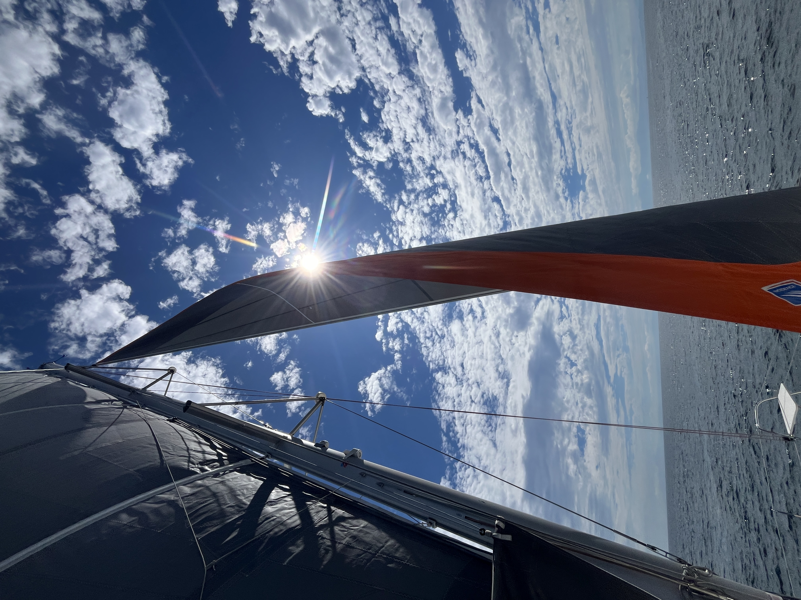

Private Charter
Private Sea Experience
A Day with the Sea.
海とともに過ごす、一日。
相模湾のマリーナから海へ出て、風、波、食、そして何もしない時間を味わう。
SOLUNAのPrivate Sea Experienceは、日常とは異なる時間の流れに身を委ねる、貸切の海上体験です。
Welcome
Boarding
相模湾の様々なマリーナにてお迎えいたします。
ウェルカムドリンクをご用意し、ゆったりとした時間の中で一日が始まります。
Sail
Cruising & Sailing
穏やかな海へ出航。
海を眺めながらクルージングを楽しみ、風が整えば帆を広げてセーリング。
エンジンの音が静まり、波を切る音だけが響く、海本来の静けさを体感していただきます。

Taste
Gastronomy
季節の厳選食材を使用したガストロノミー。
海の上だからこそ生まれる、特別な食体験をご用意します。
ワインやシャンパンとともに、ゆっくりとお楽しみください。
Pause
Anchoring
穏やかな入り江でアンカーを下ろします。
泳ぐ。読書をする。景色を眺める。
シャンパンを片手に語らう。
何もしない時間も、この体験の大切な一部です。
Return
Home Port
余韻とともに三崎港へ帰港いたします。
海で過ごした一日は、自然とともに流れる時間の豊かさを静かに心に残します。
Schedule
Schedule
| Time | Experience |
|---|---|
| 10:30 | Boarding |
| 11:00 | Cruising & Sailing |
| 12:00 | Gastronomy |
| 13:30 | Anchoring |
| 15:30 | Return |
※ 時間は目安です。天候やご希望に応じて内容や航路をアレンジいたします。
Private Charter
Private Sea Experience
貸切チャーター
¥300,000 / Day〜
ご家族、ご友人との特別な時間はもちろん、記念日や接待、撮影など、ご利用目的に合わせてプランをご提案いたします。
Information
Information
- 出港場所：相模湾の様々なマリーナ
- 所要時間：約5時間
- 貸切チャーター
- 天候・海況により航路や内容を変更する場合があります。

Closing
Time flows differently at sea.
海では、時計ではなく、
風や波、
そして自然が時間を教えてくれます。
その一日が、
心に残る特別な時間となることを願っています。